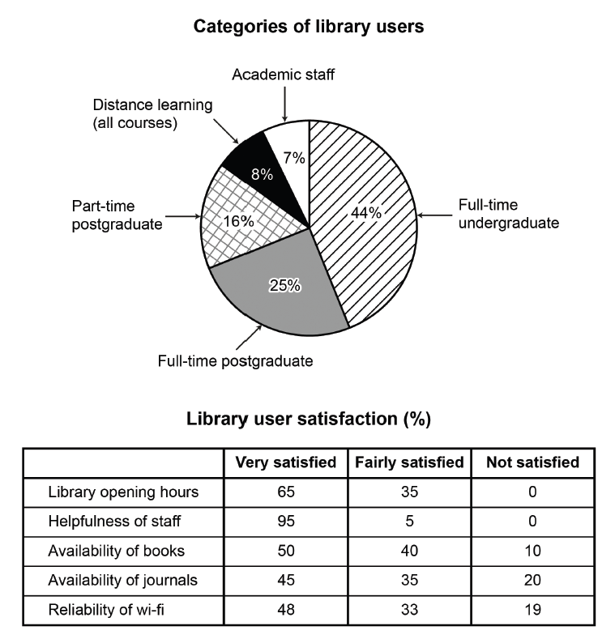

Task 1 — Library users survey (chart + table)
The chart and table below show the results of a survey of library users at a university. Summarise the information by selecting and reporting the main features, and make comparisons where relevant.

The pie chart and table present the results of a survey of library users at a university, showing who uses the library and how satisfied they are with its services.
Overall, full-time undergraduates formed by far the largest group of library users. Satisfaction was broadly positive: staff helpfulness received the highest rating, while journals and wi-fi were the least satisfactory areas.
According to the chart, full-time undergraduates accounted for 44% of users, well ahead of full-time postgraduates at 25%. Part-time postgraduates made up 16%, while distance learners and academic staff were the smallest groups, at 8% and 7% respectively.
The table shows that 95% of respondents were very satisfied with the helpfulness of staff, and nobody was dissatisfied with staff or opening hours. However, only half of users were very satisfied with the availability of books, and this figure fell to 45% for journals and 48% for wi-fi. Fairly satisfied responses were correspondingly more common for these services. Not surprisingly, journals and wi-fi also recorded the highest levels of dissatisfaction, at 20% and 19%.
TA / TR：同时覆盖饼图（用户构成）与表格（服务满意度）两类信息：饼图按份额排序（44% > 25% > 16% > 8% > 7%）并对比最大/最小群体；表格挑出最高满意度（staff 95%）与最差两项（journals 20%、wi-fi 19% 不满意），全部数字与图、表原值一致，无杜撰。
CC / LR / GRA：四段式（Intro → Overview → 饼图段 → 表格段），数据组织从大到小、从最好到最差；衔接用 According to / while / however / not surprisingly；LR 使用 account for / make up / very satisfied / dissatisfied 等图表词；GRA 简单句与比较结构交替，数字嵌入句内自然流畅。
survey— 调查account for— 占（比例）make up— 构成satisfaction— 满意度very / fairly satisfied— 非常 / 比较满意dissatisfied— 不满意的respondents— 受访者helpfulness of staff— 工作人员帮助程度